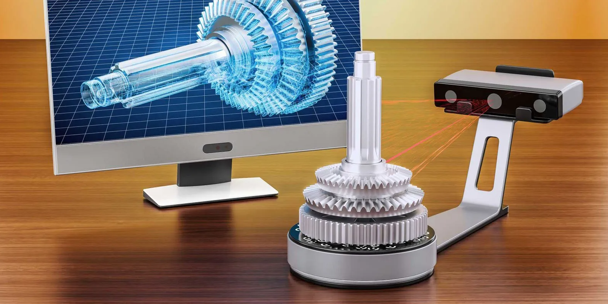

{3D Scanning}
Es una tecnología que permite capturar la forma y apariencia de objetos físicos para crear modelos digitales precisos. Utiliza sensores, láseres, o incluso cámaras para medir las dimensiones y detalles, generando un modelo tridimensional; ofrece alta precisión y ahorra tiempo al digitalizar objetos complejos de manera rápida.

{Techniques}
-
Las técnicas varian dependiendo de la calidad y objetivo que tengas en mente para tu escaneo. A continuación, presentamos las técnicas más populares:
-
LiDAR (Light Detection and Ranging)
Usa pulsos de luz láser para medir distancias y crear un mapa tridimensional del entorno. A pesar de la luz que puede haber en el entorno, a menudo no se ve tan afectado debido al rango en el que funciona.
Aplicación típica: cartografía, mediciones topográficas, creación de modelos detallados, etc. -
Cámaras de Profundidad
Utilizan sensores infrarrojos o luz proyectada para medir la profundidad y crear un modelo 3D del entorno.
Aplicación típica: sistemas como Kinect de Microsoft o algunos smartphones que permiten escaneos básicos en 3D. -
Escáneres Láser
Emplean un láser que recorre la superficie del objeto para medir sus dimensiones.
Aplicación típica: ingeniería inversa, diseño de prototipos, digitalización de objetos para producción, etc.
{Work Flow}
-
Como parte de la tarea, muestro un video donde ejemplifico y expongo los pasos para escanear un objeto desde el mismo celular.
{Evidences}
-
Aquí, un ejemplo propio del escaneo de un objeto en 3D.